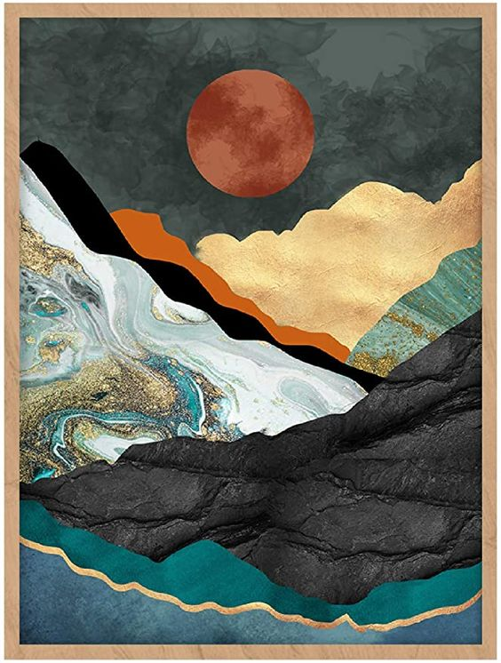

YUMKNOW Boho Mountain Wall Decor - Unframed 16x20
Ksh. 3,500
Add a touch of bohemian flair to your space with YUMKNOW's Boho Mountain Wall Decor. This 16x20 inch unframed piece brings a serene nature-inspired aesthetic to any room. Its abstract design, featuring teal hues and mid-century modern influence, makes it a versatile addition to your living room, bedroom, or office. Perfect for those seeking to elevate their decor with chic, abstract art.
Double Exposure Potrait by Andreas Lie
Ksh. 4,500
Norwegian visual artist Andreas Lie blurs the boundary between the beautiful wilderness of Norway and the people who call it home, creating subtle double exposure portraits. Inspired by the surroundings of his hometown Bergen, Norway, landscapes filled with water, snowy mountains, the Northern Lights, or the deep forests. These beautiful portraits generate a peaceful visual

Contemplative Grace
Ksh. 1,500
"Contemplative Grace" captures the essence of introspection through a delicate pencil sketch. The artwork features a woman in profile, her gaze cast thoughtfully afar, evoking a sense of serene reflection. The finesse of the lines and the soft shading techniques highlight the subject's gentle features and the windswept hair, creating a timeless piece that speaks to the soul's quiet moments.

Whispers of the Past: The Lighthouse By Tr.Pister Photography.
Khs.4,500
"Whispers of the Past: The Lighthouse" is a captivating photograph that frames a historic lighthouse emerging amidst the sharp leaves of foreground foliage. The cool, muted tones suggest a narrative steeped in nostalgia, while the unfinished structure of the lighthouse adds a sense of mystery and timelessness. This piece invites contemplation of the stories and secrets held within its walls, standing as a solitary sentinel against the test of time.

Neon Echos By Tr.Pister Photography
Ksh. 1,500
"Neon Echoes" is a surreal, digitally altered image that captures the essence of urban nightlife through a distorted lens. The interplay of light and shadow transforms an ordinary streetscape into a dreamscape of reflective surfaces and glowing contours. This piece blurs the line between reality and imagination, inviting viewers into a world where the mundane is reimagined as ethereal.

Fragmented Essencet
Khs. 8,500
"Fragmented Essence" is a profound and evocative portrait that delves into the complexity of the human spirit. The image portrays a woman's face, her gaze piercing through the veil of cracked textures that symbolize the intricate layers of our individuality and the scars of our experiences. This piece speaks to the resilience and depth found within, highlighting the beauty that persists amid life's fractures.